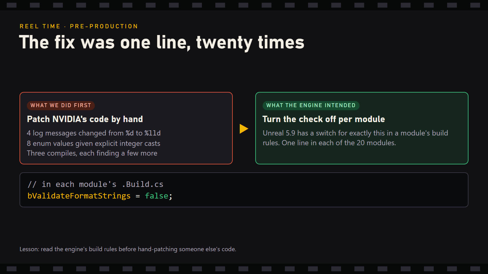

Porting NVIDIA DLSS from Unreal 5.8 to 5.9 in 75 minutes
NVIDIA's DLSS 4.5 plugin stops at Unreal 5.8. Six compiles, three editor launches and one crash later it runs on our 5.9 engine, without Frame Generation.
Day 1, Thu 12 NovHour 2
I asked for this one to be written up "even if it doesn't work". It mostly worked.
Why bother. The NVIDIA RTX Award needs an entry that uses DLSS 4.5, an NvRTX feature or NVIDIA ACE. DLSS is the only realistic one for an RTX 2060. NVIDIA's plugin (v8.9.0) supports Unreal 5.5 to 5.8, and the jam engine is a 5.9 source build. The plugin ships with full source, so a port was possible. Claude and I did it on Wednesday 11 November, before the jam, as tooling. It's declared on the Made before the jam page.
Six compiles
The download is 1.1 GB with 11 plugins. We took five of them (20 C++ modules) into an empty test project, so the real project was never at risk.
- Attempt 1: a quoting mistake in the build command. Ours, not NVIDIA's.
- Attempt 2: Windows' 260-character path limit. The test folder's path was long enough that build files went past it. Still a thing in 2026.
- Attempt 3: two minutes in, most of it compiled. Every failure was the same thing: Unreal 5.9 checks log-message format strings at compile time, and the 5.8 code passes 64-bit numbers and enum values to
%dand%u. - Attempts 4 and 5: more of the same, patched by hand each time.
- Attempt 6: "Result: Succeeded" in 2 minutes 16 seconds.
The fix we should have looked for first

After patching 12 log messages one at a time, we found that 5.9 has a per-module switch for this check. One commented line in each of the 20 modules:
bValidateFormatStrings = false;
Almost all of NVIDIA's code was source-compatible with 5.9. That check was the only real break.
Three launches

The first launch stopped at a dialog: "'DLSS' is Incompatible". The plugin files still declared engine 5.8.0, so that label was updated.
The second launch loaded in 72 seconds and then crashed the first time the editor drew the screen. Streamline, the layer behind Frame Generation and Reflex, hooks that exact step. DLSS itself doesn't. So the third launch had DLSS only, and the editor came up cleanly in 29 seconds.
What we kept

DLSS is in, with every mode from DLAA to Ultra Performance, plus Ray Reconstruction. Frame Generation and Reflex are out. A 2060 can't run Frame Generation, so it would have shipped untested, and a crash on a judge's newer card is far worse than a missing toggle. The Streamline plugins were moved out of the engine so no crew session can switch them on by accident.
Changes to NVIDIA's plugin, in full: the build switch in 20 modules, explicit integer types in 12 log messages, and the version label in five plugin files. It's used under the NVIDIA RTX SDK licence.
Total: about 75 minutes from download to a verified DLSS on 5.9.